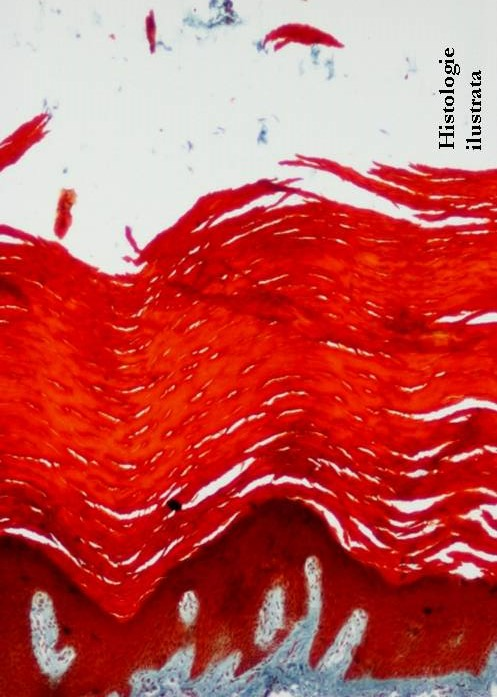
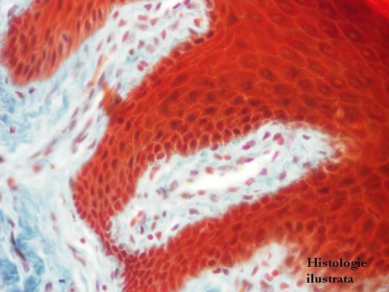
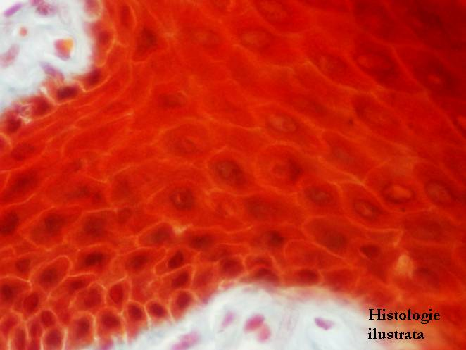
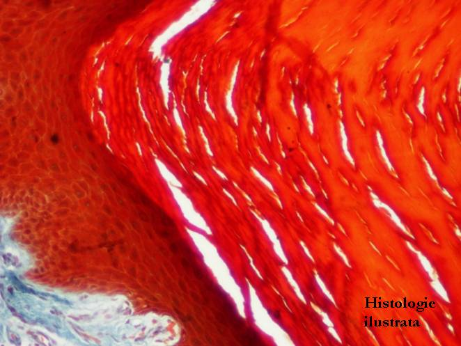
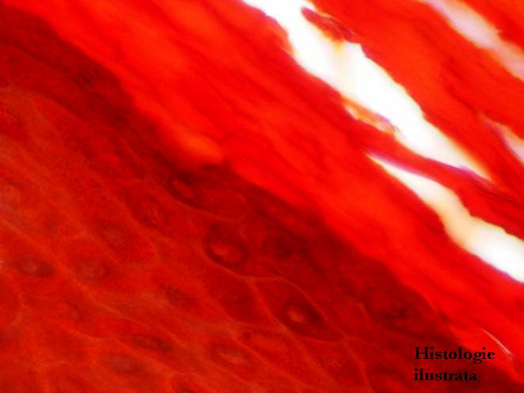
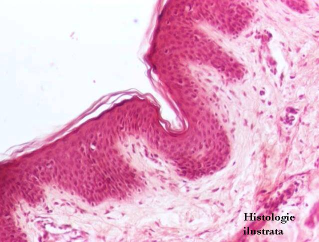
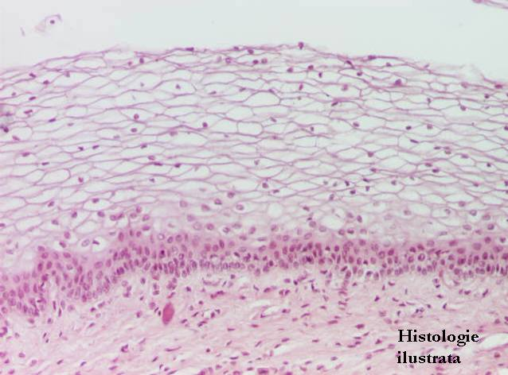
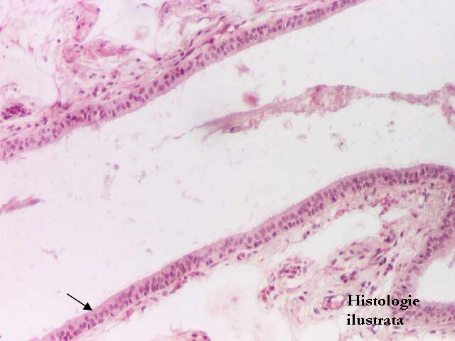
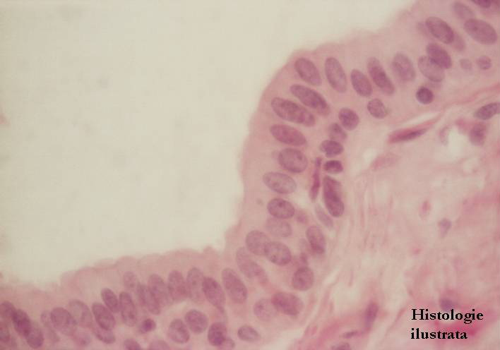

Cap.1 - Ţesutul epitelial
1.1. Epitelii de acoperire (tapetare)
Epitelii stratificate




Fig. 19 - Epiteliu stratificat scuamos (pavimentos) cu keratinizare (epiderm gros) – piele,
T.S. X 40
Fig. 20 - Epiderm gros – strat bazal, strat spinos, T.S. X 200
Fig. 21 - Epiderm gros – strat bazal, strat spinos – T.S. X 400
Fig. 22 - Epiteliu stratificat scuamos cu keratinizare – desmozomi,
H.E. X 400






Fig. 23 - Epiderm gros – strat granulos, strat cornos, T.S. X 100
Fig. 24 - Epiderm gros – strat granulos, strat cornos – T.S. X 400
Fig. 25 - Epiteliu stratificat scuamos cu keratinizare (epiderm subţire) – piele,
H.E. X 100
Fig. 26 - Epiteliu stratificat scuamos cu keratinizare (epiderm subţire) – piele,
H.E. X 200





Fig. 27 - Epiteliu stratificat scuamos fără keratinizare – esofag, H.E. X 100
Fig. 28 - Epiteliu stratificat scuamos fără keratinizare – exocol, H.E. X 100
Fig. 29 - Epiteliu bistratificat cubic – canale ale glandei sudoripare, H.E. X 200
Fig. 30 - Epiteliu stratificat cilindric – canal extralobular de glandă salivară,
H.E. X 40



Fig. 31 - Epiteliu stratificat cilindric – canal de glandă salivară – H.E. X 400